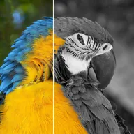

Kleuraccent

Behoudt één kleur en haalt de verzadiging uit alle andere kleuren in de laag.
Instellingen
| Instelling | Type | Bereik | Standaard |
|---|---|---|---|
| Kleur | Kleur | – | #FF0000 |
| Drempel | Getal | 0% tot 200% | 35% |
| Zachte rand | Getal | 0% tot 200% | 25% |
| Verzadiging | Getal | 0% tot 100% | 0% |
| Inkrimpen | Getal | 0.5 tot 20 | 5 |
| Grijs | Keuze | HD, SD | HD |